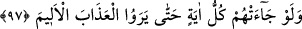

Böylece “Rabb’inin kelimesi” ile ilgili üç görüş ortaya çıkmış oldu. Onlar ebediyyen
“inanmazlar.” Çünkü O’nun sözlerinin yalan olması, hükmünün yürürlüğe girmemesi
mevzubahis değildir. Yani fayda veren, vaktinde gerçekleşen bir îmânla inanmazlar. Bu
mânâya göre Fir’avn gibi azâbı gözleriyle görünce inananlar da bu sözün hükmüne
girerler. Yine ölüm sırasında kalıcı bir îmânla inanmazlar. Buna göre mürtedler de bu
âyetin hükmüne dahil olmuş olurlar.
97. Onlara bütün mûcizeler gelmiş olsa bile, acı azâbı görünceye kadar
(inanmazlar).
“Onlara” istedikleri ve olmasını teklif ettikleri “bütün mûcizeler gelmiş olsa bile”
inanmazlar. Çünkü inanmaları için ortada sebep yoktur. Bu sebep ise Allah’ın irâdesinin
bu konuya taallukudur. Fakat bu konuda Allah’ın iradesinin bulunmaması, onların hak
ettiklerini Allah’ın men etmesi yüzünden değildir. Bilakis onların bu îmâna istîdâdları
olmamasından kaynaklanan kötü tercihleri yüzündendir.
“acı azâbı görünceye kadar” inanmazlar. Azabı gördükleri zaman inanmak ise
Fir’avn’a fayda vermediği gibi onlara da fayda vermez.
[75]. Suyûtî, ed-Dürrü’l-mensûr, II, 317
[76]. Lisanü’l-arab, XI, 75